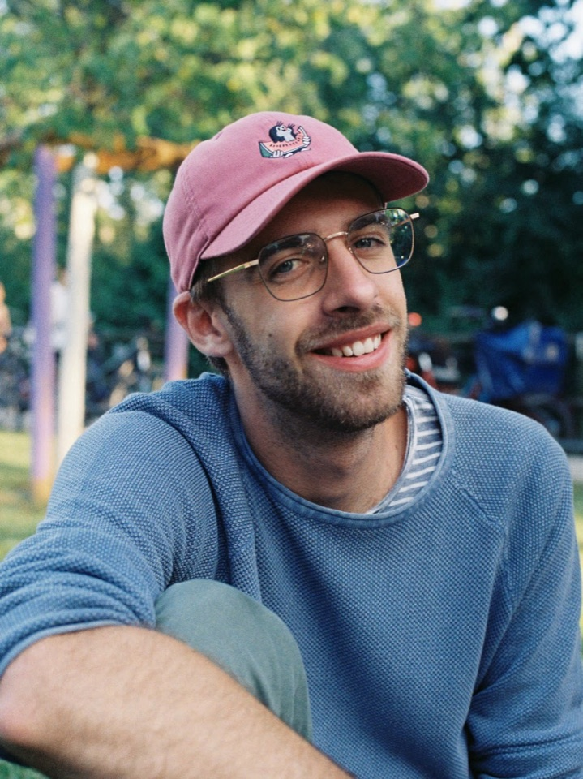

About
Luca Stengel
I'm Luca — passionate about photography and technology.
I've worked as a Camera Assistant and Key Grip on productions ranging from small indie films to major projects. You can find more details on my Crew United profile.
I'm currently studying Electrical Engineering at Hochschule München and working at ARRI in the Image Science department. Prior to that, I gained hands-on experience in the Optics department.
I also have experience as a projectionist at the "Cinema Theater" in Munich.
Get in touch info@lucastengel.com